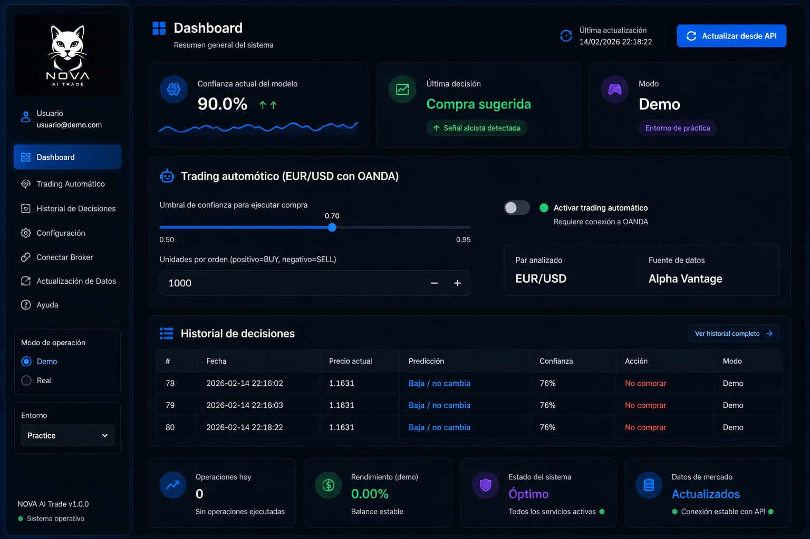
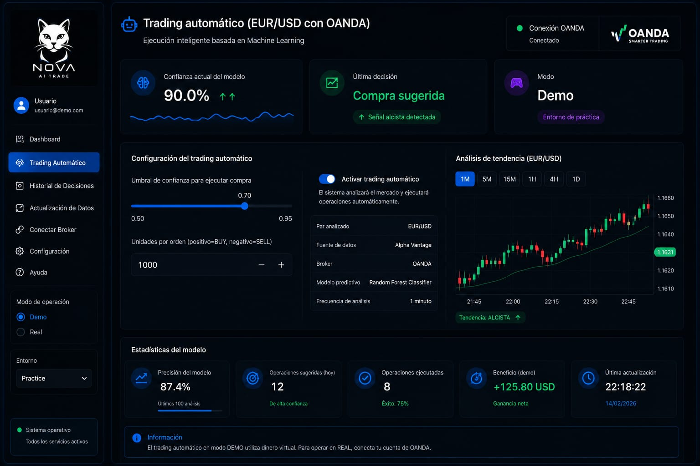
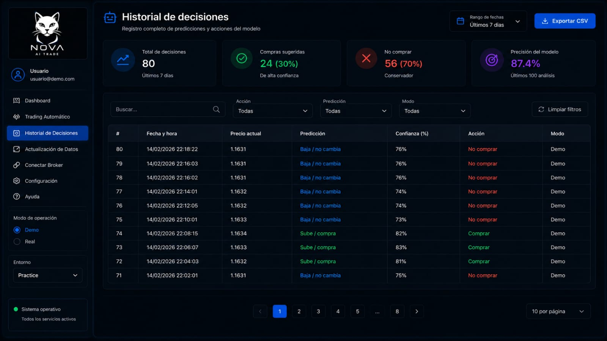
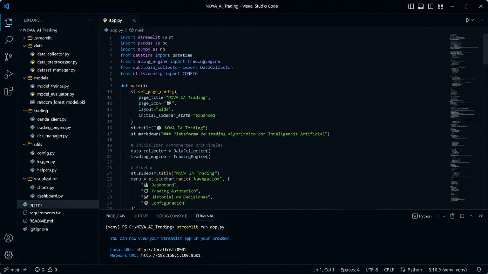

Nova IA Trading
Intelligent Forex trading powered by Artificial Intelligence, Machine Learning and automation.

Intelligent technology for smarter trading.
Nova IA Trading is an intelligent Forex trading platform designed to combine market analysis, machine learning and automation in one system.
Market Analysis
Analyzes EUR/USD market data and technical indicators to identify potential market movements.
Artificial Intelligence
Uses Machine Learning to evaluate market conditions and generate intelligent trading signals.
Automated Trading
Connects with OANDA to enable automated execution when the configured conditions are met.
Built with intelligent trading technology.
Nova IA Trading combines artificial intelligence, market analysis and automated execution to create a complete intelligent trading environment.
Machine Learning
Uses machine learning models to evaluate market conditions and generate trading signals.
Technical Analysis
Processes market data and technical indicators to identify potential movements in EUR/USD.
Trading Signals
Generates intelligent market signals based on the conditions analyzed by the model.
Automated Execution
Can execute trades automatically through the connected OANDA trading environment.
Risk Management
Includes configurable trading parameters designed to help control exposure and trading risk.
OANDA Integration
Connects directly with OANDA for market access and automated trade execution.
A complete trading environment.
Explore the main interfaces of Nova IA Trading, designed to provide market information, trading signals and automated execution in one environment.

Dashboard
Centralized view of market information, signals and platform activity.

Trading
Trading interface for monitoring and executing market operations.

Trading History
Review previous operations and platform trading activity.
Secure Access
Authentication interface designed for controlled platform access.
From market data to intelligent execution.
Nova IA Trading follows a structured process that transforms market information into intelligent trading decisions.
Market Data
The platform collects and processes EUR/USD market data for analysis.
AI Analysis
Machine Learning evaluates market conditions and relevant indicators.
Trading Signal
The model generates a trading signal based on the analyzed conditions.
Risk Management
Configured risk parameters help determine how the potential operation should be handled.
OANDA Execution
When automated trading is enabled, the configured operation can be sent to OANDA.
The technology behind Nova IA Trading.
Behind the interface, Nova IA Trading combines market data processing, intelligent analysis and automated trading logic into a single system.

Built for intelligent automation.
The platform connects different layers of the system to transform market information into actionable trading decisions.
- Market data processing
- Artificial intelligence analysis
- Trading signal generation
- Risk management logic
- Automated execution
Nova IA Trading is evolving.
This project represents the first step of Nova Labs into intelligent financial technology, with continuous development focused on artificial intelligence, automation and smarter trading systems.
Explore More Projects